This is personal study note
Copyright and original reference are from:
https://www.youtube.com/watch?v=R_6fW1tVj8Y
스프링 프레임워크 강의 8강 - 스프링 IoC 컨테이너 사용하기(ApplicationContext 이용하기)
스프링_프레임워크_강의_8강_스프링_IoC_컨테이너_사용하기_ApplicationContext_이용하기
================================================================================
- 스프링이 지시서의 내용을 읽음
- 내용대로 객체를 만들고 활용함
================================================================================
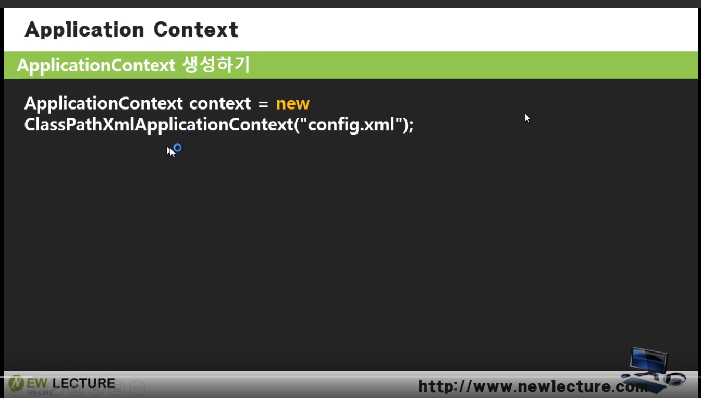
- 지시서를 읽어서 객체를 조립해서 생성해주는 스프링의 객체이름은 ApplicationContext 임
- ApplicationContext 는 인터페이스명
- 구현 클래스 이름은 ClassPathXmlApplicationContext
================================================================================
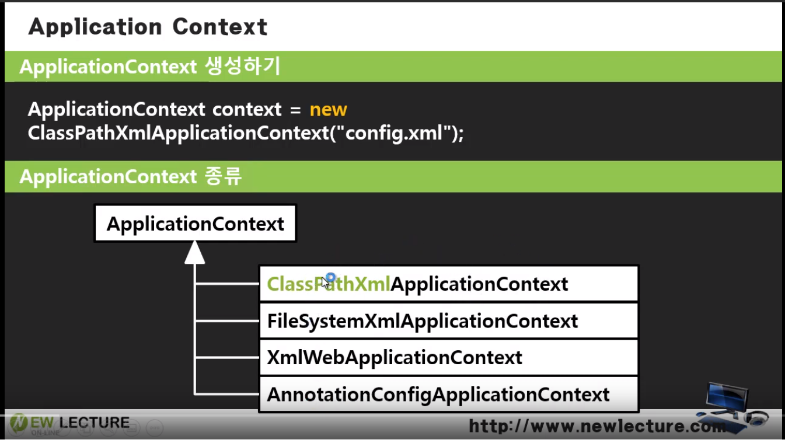
- ApplicationContext 종류가 다양함
- 지시서 config.xml 을 넘길때, 위치에 따라 달라짐
- 어플리케이션 루트로 부터 경로 지정: ClassPathXmlApplicationContext (config.xml 이 루트에 위치함, 거기서 config.xml 파일을 찾아라)
- FileSystemXmlApplicationContext: config.xml 이 C드라이브 어디에 있음
- XmlWebApplicationContext: config.xml 이 웹에 있음
- AnnotationConfigApplicationContext: 파일로 사용하지 않고, 어노테이션 기반 스캔으로 사용
================================================================================
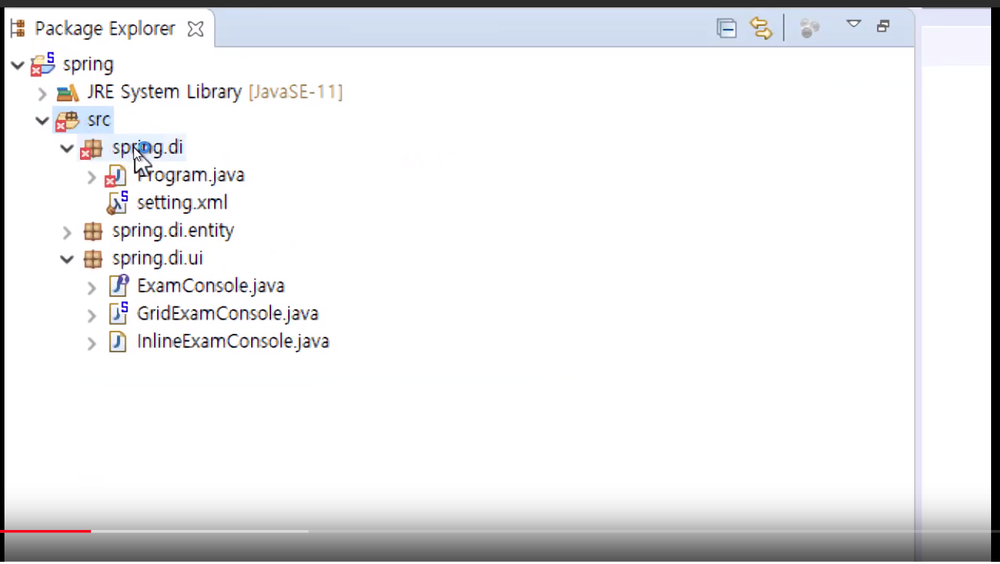
- 루트는 src/
================================================================================
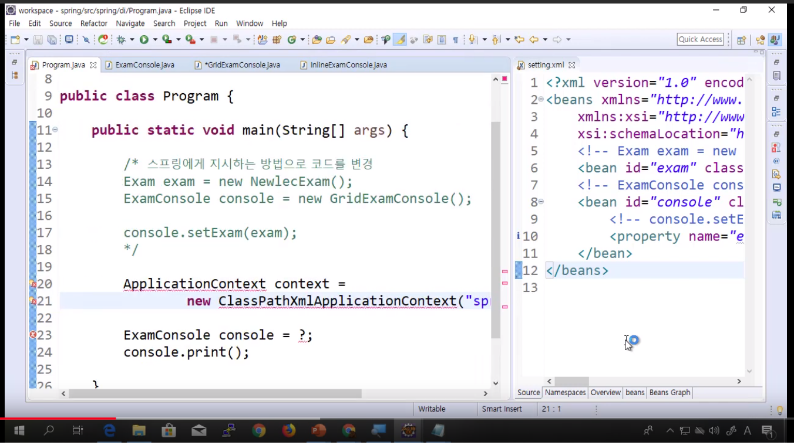
ApplicationContext context=new ClassPathXmlApplicationContext("spring/di/setting.xml")
================================================================================
스프링 라이브러리를 가져오는 방법
1. 스프링 라이브러리를 직접 다운로드
2. 메이븐 프로젝트로 만들었으면, dependency 로 지정하면 알아서 가져옴
================================================================================
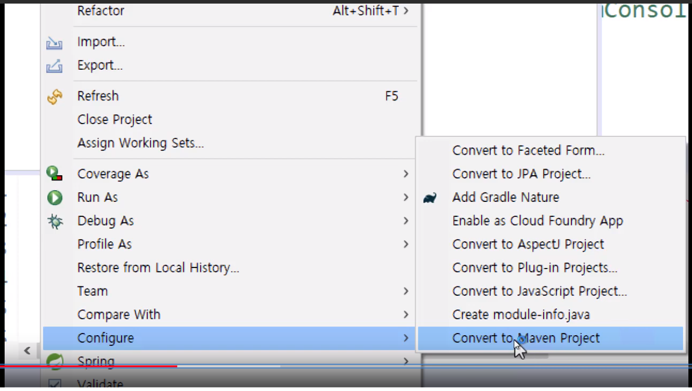
- 이클립스 프로젝트에서 메이븐 프로젝트로 바꾸기
================================================================================
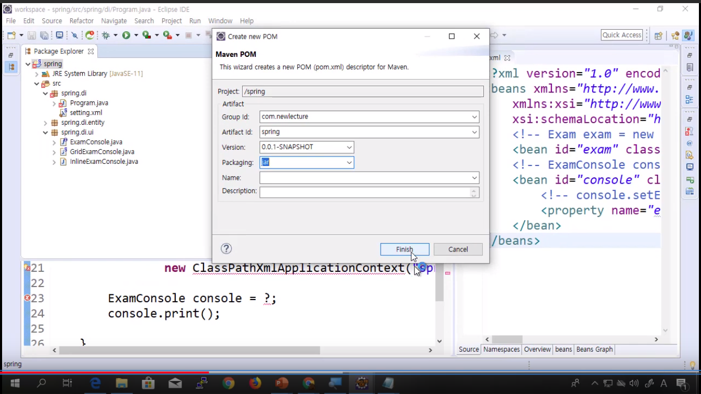
================================================================================
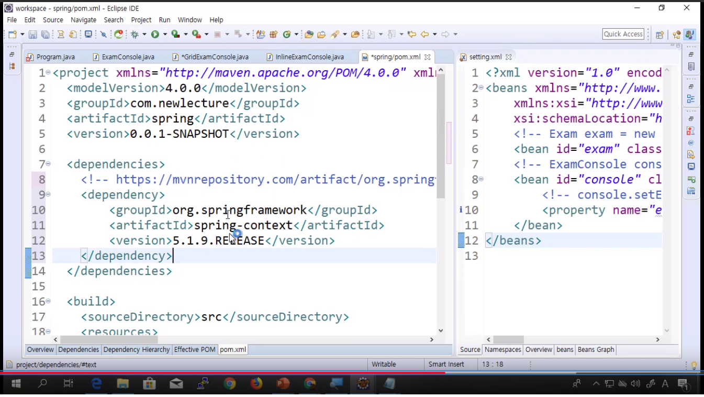
================================================================================
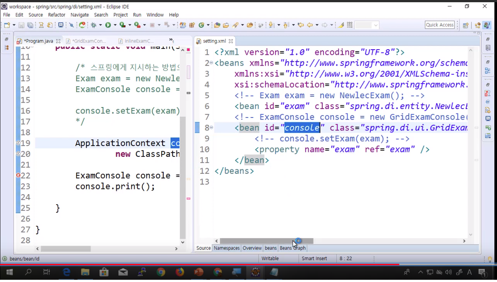
- IoC 컨테이너에 조립된 객체들이 담겨있다
- 이름 (id) 로 꺼내쓴다
================================================================================
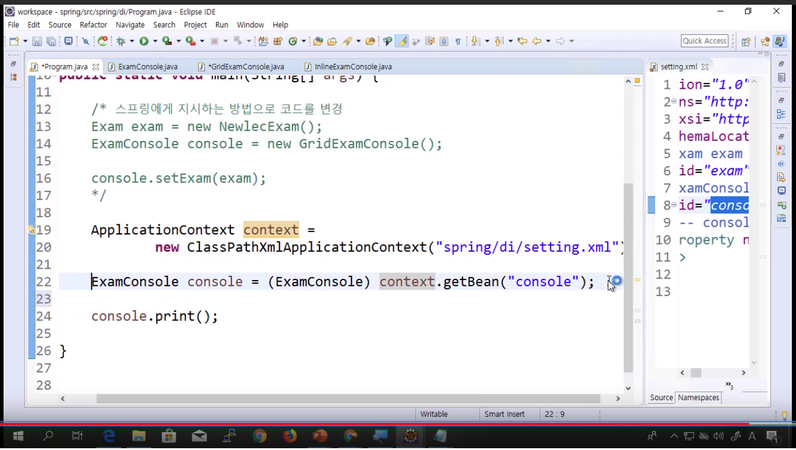
================================================================================
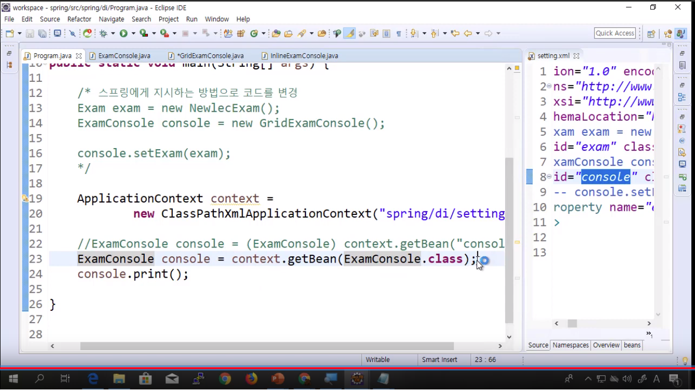
================================================================================
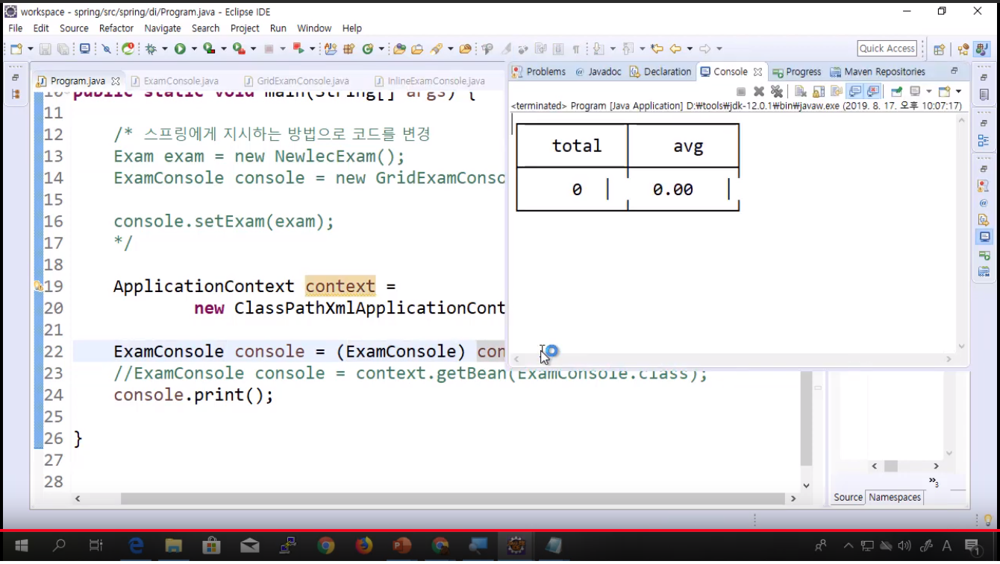
================================================================================
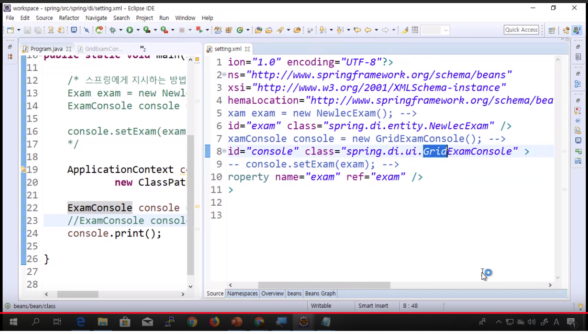
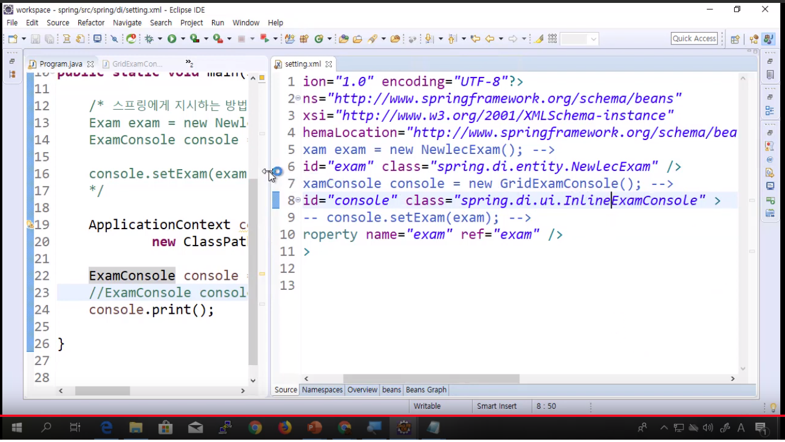
- Grid 에서 Inline
================================================================================
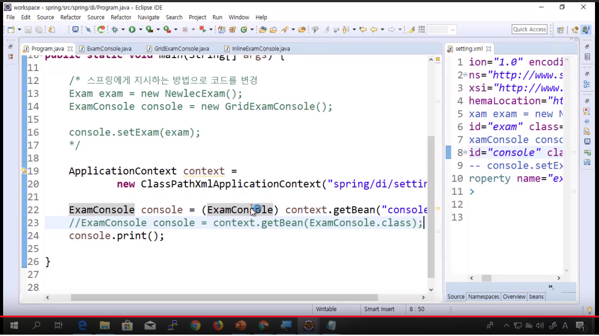
- 소스코드에는 변화가없음